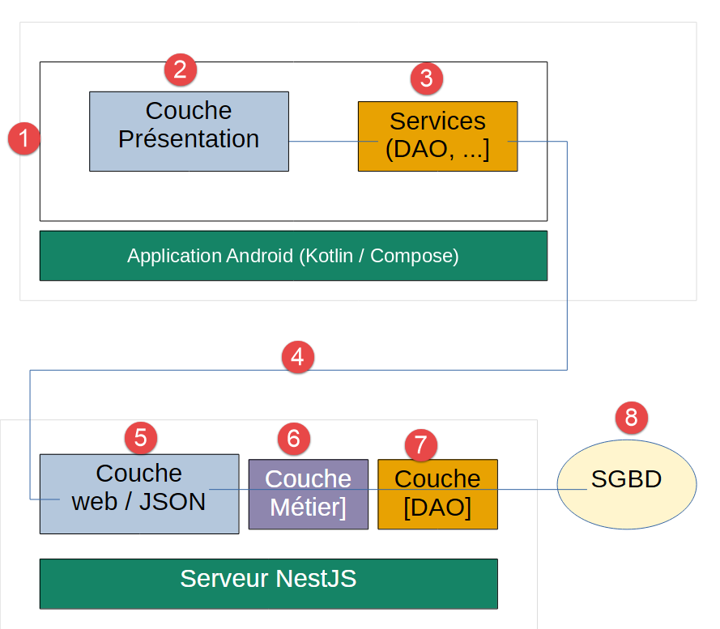

1. Introduction
Le PDF du document est |ICI|.
Les codes du document sont |ICI|.
Ce document est un produit de l’IA Claude d’Anthropic. Il a pour vocation de transposer le document : Un exemple de client / serveur - AngularJS 1.x / Spring 4 de deux manières :
- le client AngularJS 1.x est remplacé par une application Android native écrite en [Kotlin] avec [Jetpack Compose] ;
- le framework web Java Spring MVC est remplacé par le framework web [NestJS] ;
Il suit pour cela, chapitre par chapitre, le document Un exemple de client / serveur - Flutter / NestJS (2026) : même serveur, même base de données, même architecture du client - seul le framework du client change, Flutter (Dart) étant remplacé par Jetpack Compose (Kotlin).
L’IA Claude d’Anthropic a fait l’essentiel du travail :
- génération des codes : Claude a généré la totalité du code du client Kotlin. Il l’a compilé et testé lui-même dans un émulateur Android, sur le poste du réviseur et avec son accord ; les captures d’écran de l’émulateur ont été prises pendant ces tests ;
- génération du cours au format ODT : Claude a généré le document, que le réviseur a relu et testé en le suivant.
Note 1 : Si le lecteur a pour premier but « apprendre NestJS », la présentation de ce framework web est disponible dans le document Introduction au langage TypeScript et au framework web NestJS par l’exemple. Dans ce document, le serveur NestJS est une boîte noire. On vous dit comment l’utiliser mais son code n’est pas décrit.
Note 2 : Le langage de programmation de ce document est [Kotlin]. Ses bases (classes, data classes, nullabilité, lambdas, fonctions d’extension, collections...) sont supposées connues : elles sont présentées dans le cours Kotlin. Les notions propres à Android ou à Jetpack Compose, ainsi que les coroutines, sont, elles, expliquées au fil du document.
Note 3 : Claude fait souvent référence au client [Flutter] du cours Un exemple de client / serveur - Flutter / NestJS (2026), dont ce document est le portage, et parfois aux clients web Angular, React et Vue.js de la même application. Ces comparaisons aident le lecteur qui connaît l’un de ces frameworks, mais aucun d’eux n’est nécessaire pour suivre ce document.
Note 4 : si les explications de Claude ne vous semblent pas suffisantes, faites une requête à Claude pour lui demander des explications sur tel ou tel point de son cours. C’est souvent efficace.
Serge Tahé, octobre 2026
==
Ce document fait suite au cours “Un exemple de client / serveur - AngularJS 1.x / Spring 4”, écrit en 2014. Ce document original construisait une petite application de prise de rendez-vous médicaux (« [RdvMedecins] ») avec un serveur Spring 4 / Spring Data / Spring MVC et un client AngularJS 1.x.
Douze ans plus tard, les deux frameworks utilisés ont profondément évolué, ou ont même été remplacés dans les usages courants :
- côté serveur, [NestJS] s’est imposé comme l’un des frameworks Node.js/TypeScript les plus utilisés pour construire des API web structurées, avec une philosophie proche de celle de Spring (modules, contrôleurs, services, injection de dépendances) ;
- côté client, les applications sont de plus en plus souvent consultées sur un téléphone. Ce document construit donc une application Android NATIVE : écrite en [Kotlin], le langage recommandé par Google pour Android depuis 2019, et dotée d’une interface décrite avec [Jetpack Compose], la bibliothèque d’interface déclarative d’Android (version stable depuis 2021), qui remplace l’ancien système de vues décrites en XML.
L’objectif de ce document est de reprendre l’étude de cas originale - la même application, les mêmes fonctionnalités, la même base de données - et de la reconstruire avec les outils actuels, en conservant autant que possible la même progression pédagogique que le document de 2014 et que sa variante Flutter de 2026.
1.1. Une reconstruction par étapes
Le document original faisait environ 300 pages et couvrait, en plus du cœur fonctionnel de l’application : l’authentification par rôles (Spring Security), et douze exemples progressifs pour découvrir AngularJS 1.x pas à pas. Comme la variante Flutter, ce document couvre :
- l’architecture générale de l’application (inchangée dans son principe) ;
- la base de données (inchangée, à l’ajout près de la table [users]) ;
- l’installation du serveur [NestJS] complet, dont on teste avec Postman les fonctionnalités de consultation et de réservation/annulation de rendez-vous - son code n’est pas étudié ici ;
- l’authentification par jetons JWT et le contrôle d’accès par rôles (ADMIN/USER) de ce serveur - on apprend seulement à s’en servir, depuis Postman puis depuis le client ;
- le client Android correspondant, avec les mêmes fonctionnalités, un écran de connexion, une interface adaptée au rôle de l’utilisateur connecté (Material Design 3) et le passage français/anglais de l’interface ([TranslationsService]).
Deux fonctionnalités du document original restent hors de ce document, comme dans la variante Flutter : le mode « debug » du client original, délibérément laissé de côté (cf. chapitre 6), et le réglage d’un délai réseau artificiel, reporté à une étape ultérieure.
1.2. À qui s’adresse ce document
Ce document ne suppose aucune connaissance préalable ni d’Android, ni de Jetpack Compose, ni de [NestJS]. Chaque notion nouvelle (activité, fonction @Composable, état, ViewModel, coroutine, intercepteur HTTP...) est expliquée au moment où elle apparaît. Quelques bases sont malgré tout utiles :
- une connaissance de base du langage Kotlin (cf. le cours Kotlin) ;
- une connaissance de base des échanges HTTP (méthodes GET/POST, format JSON) ;
- l’utilisation d’une ligne de commande (cd, npm install...).
La connaissance de Flutter n’est pas nécessaire : les comparaisons avec le client Flutter, nombreuses, sont là pour le lecteur qui a suivi ce cours, mais chaque notion est d’abord expliquée pour elle-même.
1.3. L’architecture de l’application
L’architecture générale de l’application n’a pas changé depuis le document original :
- le client présente à l’utilisateur une interface unique, construite sur le modèle Composant (affichage + logique associée), qui s’appuie sur des services pour dialoguer avec le serveur - ici, une application Android exécutée par le système du téléphone ;
- l’utilisateur interagit avec les écrans de l’application. Ses actions nécessitent parfois l’interrogation du serveur [NestJS], qui traite la demande et rend une réponse JSON ; celle-ci est utilisée pour mettre à jour l’écran présenté à l’utilisateur.
L’application étudiée aura l’architecture suivante :

- en [1], l’utilisateur de l’application Android interroge la couche [présentation] [2] de celle-ci ;
- pour exécuter l’action demandée par l’utilisateur, la couche [présentation] [2] peut interroger la couche [Services] [3] ;
- pour rendre le service demandé, la couche [3] peut avoir besoin d’interroger [4] le serveur JSON distant implémenté par [NestJS] ;
- selon la requête reçue en [5], les couches [6-8] peuvent être interrogées ;
- la réponse du serveur remonte les couches [2-8] à l’envers ;
- l’écran affiché à l’utilisateur [1] reflète cette réponse.
Note : si vous êtes perdu dans l’architecture du projet, revenez à ce schéma. Notez bien que le SGBD est exploité par le serveur et non par le client.
1.4. Les outils utilisés
Ce document utilise les outils suivants (leur installation est détaillée aux chapitres 1 et 2) :
- Node.js (version 22 ou plus récente) et npm, pour exécuter le serveur [NestJS] ;
- [Android Studio], l’environnement de développement de Google pour Android. Il apporte tout ce qu’il faut au client : l’éditeur de code (construit sur IntelliJ IDEA), le SDK Android, un JDK (le JetBrains Runtime), l’émulateur Android et l’outil de construction [Gradle]. Contrairement au cours Flutter, où Android Studio ne servait qu’à installer le SDK Android, il est ici l’éditeur du client ;
- Visual Studio Code (ou tout autre éditeur) pour le serveur NestJS, si l’on souhaite consulter son code ;
- [MySQL] 8 pour la base de données, installé avec Laragon ;
- Postman (ou tout autre client HTTP), pour tester les URL du serveur ;
- un téléphone Android, facultatif : un émulateur suffit pour suivre tout le document.
1.5. Les fonctionnalités de l’application
Les fonctionnalités « métier » de l’application [RdvMedecins] sont celles des variantes précédentes :
- un cabinet médical emploie plusieurs médecins, chacun avec ses propres créneaux horaires de consultation ;
- un utilisateur doit se connecter (login/mot de passe) pour accéder à l’application ;
- une fois connecté, il peut choisir un médecin et un jour, et consulter son agenda pour ce jour : chaque créneau horaire y apparaît libre, ou occupé par un rendez-vous ;
- un utilisateur du rôle ADMIN peut, en plus, réserver un créneau libre pour un patient de son choix, et annuler un rendez-vous déjà pris ;
- un utilisateur du rôle USER consulte les agendas mais ne peut ni réserver ni annuler (accès en lecture seule).


Ci-dessus, l’application dans l’émulateur Android : l’écran de connexion, puis l’agenda d’un médecin, après la réservation d’un créneau.
1.6. Ce qui change, ce qui ne change pas
Document original (2014) | Variante Flutter (2026) | Ce document (2026) | |
MySQL 5 | MySQL 8, mêmes tables | identique à la variante Flutter | |
Java, Spring 4 | TypeScript, NestJS | le même serveur NestJS | |
JavaScript, AngularJS 1.x | Dart, Flutter (mobile, bureau, web) | Kotlin, Jetpack Compose (Android) | |
navigateur | code natif compilé par Flutter | machine virtuelle Android (ART) | |
bower | flutter / pub | Gradle | |
Spring Security, HTTP Basic | Passport/JWT | Passport/JWT (même serveur) | |
angular-translate | TranslationsService (fait main) | TranslationsService (fait main, mêmes dictionnaires) |
1.7. Organisation de ce document
- Chapitre 1 - Mise en place de l’environnement de travail : installer Android Studio et le SDK Android, ouvrir le projet du client, créer un émulateur, préparer un téléphone.
- Chapitre 2 - Installation du serveur [NestJS] : installer Laragon et la base de données MySQL, configurer, lancer et tester le serveur, puis lancer une première fois le client.
- Chapitre 3 - Introduction à Android et à Jetpack Compose : activité, fonctions @Composable, état et recomposition, CompositionLocal, coroutines, cycle de vie et ViewModel - avec, à chaque fois, l’équivalent Flutter.
- Chapitre 4 - Le client Kotlin de l’application [RdvMedecins] : l’architecture du client, chacun de ses fichiers, et une utilisation pas à pas de l’application complète.
- Chapitre 5 - Exécuter l’application : émulateur, téléphone, APK - et ce qu’il faut savoir du réseau, du trafic HTTP en clair, de la rotation de l’écran et des écrans étroits ; enfin, ce qu’il faudrait pour viser aussi iOS, le bureau et le web.
- Chapitre 6 - Conclusion et étapes suivantes.